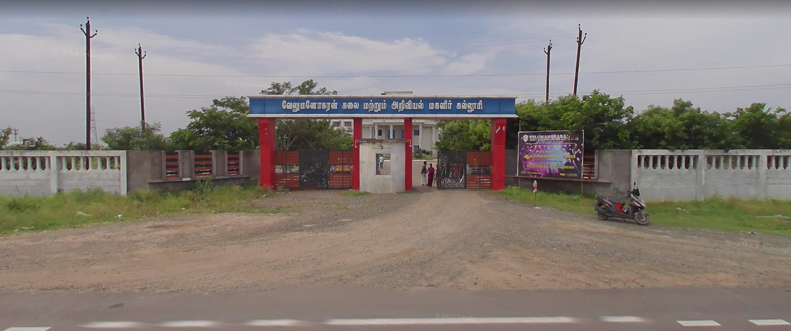

Our Facilities
SALIENT FEATURES OF VMASCW
CLASS ROOMS
Class rooms in VMASCW are capable of accommodating a large number of students. They are spacious and well ventilated. The classrooms are well equipped with ICT facilities such as LCD projectors.
ENGLISH LANGUAGE LAB

Learning a new language just by studying the theory is not enough to guarantee a successful language learning experience. Language labs provide practice in an entertaining and interactive way to acquire listening, speaking, reading, and writing skills. Students learn more comprehensively through a language lab, using more class time instead to improve the accent, intonation and expression. It offers self-learning facilities wherein each student is provided with a computer, head phone and a CD in listening comprehension. Computer based testing and viva are a part of I and II semester general English curriculum for which practicals are conducted in the Lab. Extensive practice in this lab boosts the confidence of the students.
COMMERCE LAB
Commerce Lab aims at stressing the importance of practical application of knowledge gained through theory. It aims to give Practical orientation to students on matters relating to Banking, Insurance, Taxation, Foreign Trade, Corporate affairs, Stock exchange etc. by the faculty and resource persons
CHEMISTRY AND PHYSICS LAB
The College emphasizes on Practical training of the students. Laboratories are the essential features of learning Science. All the science departments are provided with well-equipped and sophisticated instruments. These labs serve as potential centers for research and project works.
INTERNET ENABLED COMPUTER LABS
Traditionally, computer labs have been configured to support teaching and learning by providing rows of computers in a lecture-style classroom set-up. Lab computers and software allowed students to complete course assignments or learn new programs. VMASCW has a state-of-the art Hi-tech internet enabled computer lab, to improve technical skills and encourage continuous support to students, helping them to familiarize with tech-savvy modern work places and thus preparing them for their careers.
AUDITORIUM AND CONFERENCE HALL
VMASCW has a spacious Auditorium which can accommodate 1000 students for academic and cultural programmes on various occasions. It also has an LCD projector with computer and sound system to aid audio-visual presentation.
SPORTS & GAMES
“Play while you play and study while you study”. Sportsis a vital activity required to develop a strong mind, confidence and develops a sense of team spirit and unity. The college is well equipped with sufficient indoor and outdoor facilities – Chess, Carrom, Basket Ball, Kho-Kho, Kabbadi, Volley Ball, Shuttle Badminton, Tenni-Koit, and Athletics.
PHOTOCOPY AND TELEPHONE FACILITY
The college provides local & STD telephone facilities to the students. Photocopying facility helps the students to get copies of reference from library, lecture synopsis, question papers and other necessary documents.
RESIDENTIAL FACILITIES – HOSTEL
Studying away from home opens up a world to develop the spirit of healthy competition and also teaches the lesson of mutual cooperation among the students from out stations within the state and other states of India. VMASCW provides a well-managed hostel to prove a blessing for those who are lucky enough to live in it. The students will be taken care by a motherly cared warden and nurtured with healthy and hygienic food.
SECURITY FACILITIES

As safety is the prime concern of the management floor wise CCTV’s are installed in the college campus and hostel block. 24 hours security is provided by the management by appointing security personnel to watch over the main gate. To protect the campus from accidents fire extinguisher is placed on all floors. It is supervised and the maintained by regular monitoring.
Library
The college library is a sanctuary of knowledge and a haven for curious minds. With its towering shelves of books, quiet study corners, and a wealth of digital resources, it serves as the intellectual heart of our campus. Here, students embark on journeys of exploration, research, and learning, finding solace and inspiration amidst the pages of countless volumes. It's a place where ideas are born, questions find answers, and dreams are nurtured, making it an indispensable part of our educational community.
Transport
Our college transport facility is designed with the convenience and safety of our students in mind. With a fleet of well-maintained vehicles and dedicated drivers, we ensure that commuting to and from campus is hassle-free. Whether you live near or far, our reliable transport service offers a comfortable and punctual way to reach college, allowing you to focus on your studies without worrying about the commute. Your safety and convenience are our top priorities making our transport facility an essential part of the college experience.
Hostel
Our college hostel facility is more than just a place to stay; it's a home away from home. Nestled within the campus, our hostels provide a safe, comfortable, and inclusive environment for students from diverse backgrounds. With well-furnished rooms, modern amenities, and round-the-clock security, we ensure that your stay is both pleasant and secure. Additionally, our hostels foster a sense of community and camaraderie, offering a space for students to form lifelong friendships and engage in various extracurricular activities. It's not just a place to rest; it's where you'll create lasting memories and experience the true essence of college life.
Leave a Comment